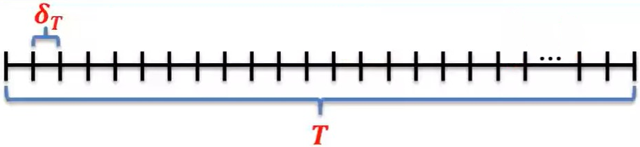
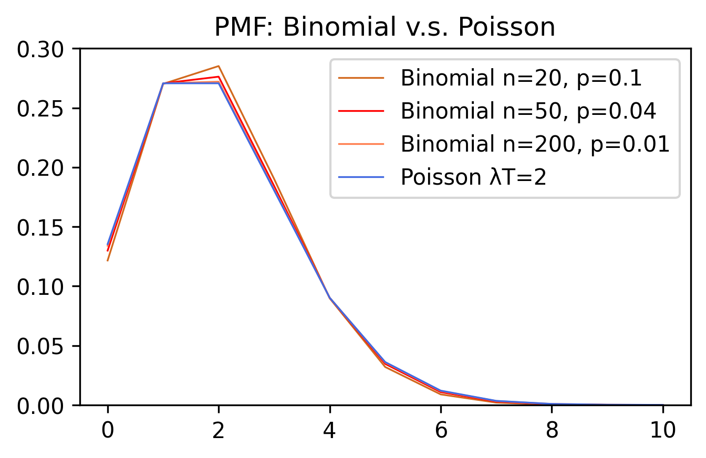
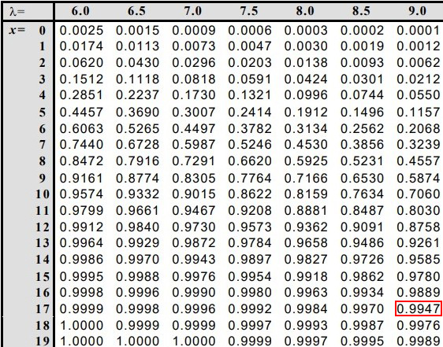

一维随机变量
1 什么是随机变量
随机变量的本质就是函数。和一般的函数不同，随机变量是事件到函数值的映射。为了更明确这一点，我们以最简单的掷骰子为例，一颗公平6面筛的投掷结果得到1~6点的几率是相等的。设随机变量$X$，那么，我们可以定义： $$ X(投掷结果为1)=1 $$ $$ X(投掷结果为2)=2 $$ $$ ... $$ $$ X(投掷结果为6)=6 $$ 而为了简单起见，我们把上述内容简写为$X=1,X=2,...,X=6$等。而现在我们就可以把概率和随机变量联系在一起了。令随机变量$Y$表示：骰子投掷结果到几率的映射(注意这里$Y$也是函数)，那么我们可以套用复合函数的概念： $$ Y(X=1)=\frac{1}{6} $$ 就表示：投掷结果为1($X=1$)的概率为$\frac{1}{6}$($Y(X=1)=\frac{1}{6}$)。
下面先来看一下随机变量的正式定义：
设$S$为样本空间，对于每一个随机试验的结果$e\in S$都有唯一的实数与它对应，得到一个定义在$S$上的单值函数$X=X(e)(e\in S)$就成为随机变量。
从这个定义中我们可以看出，随机变量和普通函数最大的区别在于，随机变量是定义在样本空间上的，而样本空间是由随机试验结果的描述所构成的。
引入随机变量的重要意义在于，我们把对事件概率的研究，抽象成为了对随机变量的研究。这有利于我们识别某一类具有共性的事件的发生规律。在下文的各种概率分布中，会更深刻的体会到这一点。
2 离散型随机变量
2.1 二项分布
二项分布$X\sim Binomial(n,p)$所要抽象出的是这么一种情况：
条件：1. 每次试验都是独立的，结果互不影响； 2. 试验的结果只有成功和失败两种。
关心的事件及概率：$n$次试验，成功$k$次的几率为$C_n^kp^k(1-p)^{n-k}$
2.2 泊松分布
2.2.1 引例：保险公司获利
保险公司推出学生意外伤害险，每位参保人需缴纳50元保费，出险时可获得2万元赔付。已知一年中的出险概率为0.15%，共有6000名学生参保。求保险公司在该意外伤害险中获利不少于6万元的概率？
首先，每个学生是否出险是独立事件，那么6000人的出险情况显然服从二项分布。设有$X$为出险的学生数量，那么：
$$ P(50\cdot 6000-20000X\ge 60000)=P(X\le12) $$ $$ \Rightarrow \Sigma_{k=0}^{12}C_{6000}^k0.0015^k(1-0.0015)^{6000-k} $$实际计算会比较复杂，因此为了求出近似解，引入泊松分布。
2.2.2 泊松分布的推导
设事件发生的速率为每单位时间$\lambda$次，观察时间为$T$，随机变量$X$为观察时间内该事件发生的总次数。如果我们把观察的总时间$T$切分为很多个小段，每个小段的长度是$\delta_T$：  那么就会有$n=\frac{T}{\delta_T}$个小段，每一个小段事件发生的几率为$\lambda\delta_T=\frac{\lambda T}{n}$；而此时$n$个小段发生$X=x$次事件的几率服从二项分布，即$X\sim Binamal(n, \frac{\lambda T}{n})$，因此我们可以写出：
$$ P_X(x)=C_n^x(\frac{\lambda T}{n})^x(1-\frac{\lambda T}{n})^{n-x} $$当我们的$\delta_T$切分的足够小时，$n\rightarrow\infty$，于是上式化为：
$$ \lim_{n\to\infty}\frac{n!}{(n-x)!x!}(\frac{\lambda T}{n})^x(1-\frac{\lambda T}{n})^{n-x}=\lim_{n\to\infty}\frac{n\cdot(n-1)\cdot...\cdot(n-x+1)}{x!}(\frac{\lambda T}{n})^x(1-\frac{\lambda T}{n})^{n-x} $$而其中$n\cdot(n-1)\cdot…\cdot(n-x+1)$和$(\frac{\lambda T}{n})^x$都有$x$项，因此上式可写为：
$$ \lim_{n\to\infty}\frac{n}{n}\frac{n-1}{n}...\frac{n-x+1}{n}\frac{(\lambda T)^x}{x!}(1-\frac{\lambda T}{n})^n(1-\frac{\lambda T}{n})^{-x} $$由于$n\to\infty$，因此前面这$x$项每一项都是1；最后一项中的$-\frac{\lambda T}{n}\to0$；而$x$和极限无关，因此上式继续化为：
$$ \frac{(\lambda T)^x}{x!}\lim_{n\to\infty}(1-\frac{\lambda T}{n})^n=\frac{(\lambda T)^x}{x!}\lim_{n\to\infty}(1+\frac{-\lambda T}{n})^n=\frac{(\lambda T)^x}{x!}e^{-\lambda T} $$这样一来，我们就得到了泊松分布的分布函数，若$X\sim Poisson(\lambda T)$，则其概率密度函数为$\frac{(\lambda T)^x}{x!}e^{-\lambda T}$，简单来说，泊松分布式二项分布的近似分布，关心的是大量(二项分布中$n$很大)试验中稀有(二项分布中$p$很小)事件发生的概率。
那么，泊松分布和二项分布究竟有多接近呢？我们固定$\lambda T=2$，使用二项分布中不同的$n\cdot p$组合绘图看看，使用Python绘图的代码如下：
import numpy as np
from scipy.stats import binom
from scipy.stats import poisson
import matplotlib.pyplot as plt
x_values = np.arange(0, 11)
# parameters of Binomial
n1, p1 = 20, 0.1
n2, p2 = 50, 0.04
n3, p3 = 200, 0.01
# paramater of Poisson
lambda_T = 2
# Calculate PMF
binomial_pmf1 = binom.pmf(x_values, n1, p1)
binomial_pmf2 = binom.pmf(x_values, n2, p2)
binomial_pmf3 = binom.pmf(x_values, n3, p3)
poisson_pmf = poisson.pmf(x_values, lambda_T)
# Draw lines
plt.figure(figsize=(5, 3), dpi=300)
plt.plot(x_values, binomial_pmf1, color='chocolate', linewidth=0.8, label=f'Binomial n={n1}, p={p1}')
plt.plot(x_values, binomial_pmf2, color='red', linewidth=0.8, label=f'Binomial n={n2}, p={p2}')
plt.plot(x_values, binomial_pmf3, color='coral', linewidth=0.8, label=f'Binomial n={n3}, p={p3}')
plt.plot(x_values, poisson_pmf, color='royalblue', linewidth=0.8, label=f'Poisson λT={lambda_T}')
plt.title('PMF: Binomial v.s. Poisson')
plt.ylim(0,0.3)
plt.legend()
plt.show()
绘制结果为：

不难看出，当二项分布越来越大量($n$越大)且稀有($p$越小)时，泊松分布就越接近二项分布。图中当$n=200, p=0.01$时，二项分布的概率密度函数几乎与泊松分布的重合。因此泊松分布是二项分布误差相当小的近似。
2.2.3 泊松分布的应用例题
在保险问题中，$T=6000,\lambda=0.15%$，可以用泊松分布近似求解，即$X\sim Poisson(9)$，解不等式$P(X\le12)$，可以通过查表或计算器计算，得到概率值约为0.876。
再来看另外一个例题：工厂内有900台设备，各台机器工作相互独立，且每台机器发生故障的概率为0.01。当一台设备故障时，需要一名工人来处理。那么，工厂至少要配备多少工人，才能使得有机器出现故障且无工人及时维修的概率小于0.01？
设需要配备$n$个人，同时发生故障的机器台数$X\sim Bin(900, 0.01)$显然可以用泊松分布近似。即$X\sim Poisson(9)$；机器有故障，而没有工人及时维修，也就是说出现故障的机器台数大于工人个数，即:
$$ P(X>n)<0.01 $$ $$ \Rightarrow 1-P(X<=n)<0.01\Leftrightarrow P(X<=n)>0.99 $$ $$ \Sigma_{x=0}^{n}\frac{9^x}{x!}e^{-9}>0.99 $$查泊松分布的累积概率分布表可以知道，当$\lambda T=9$时，使得上式满足的$n$至少为17，因此工厂至少需要配备17名工人。
